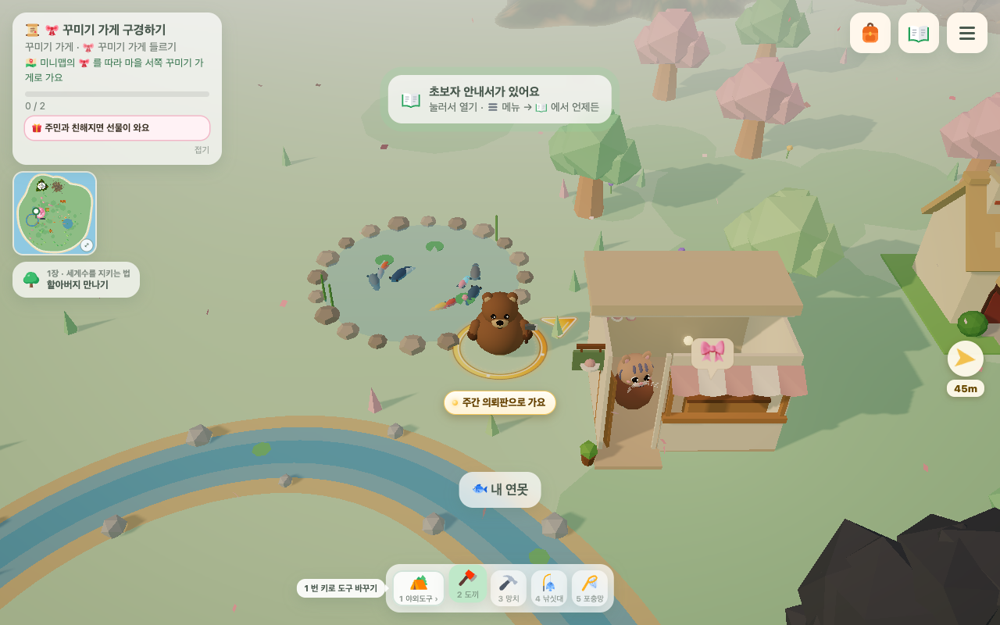
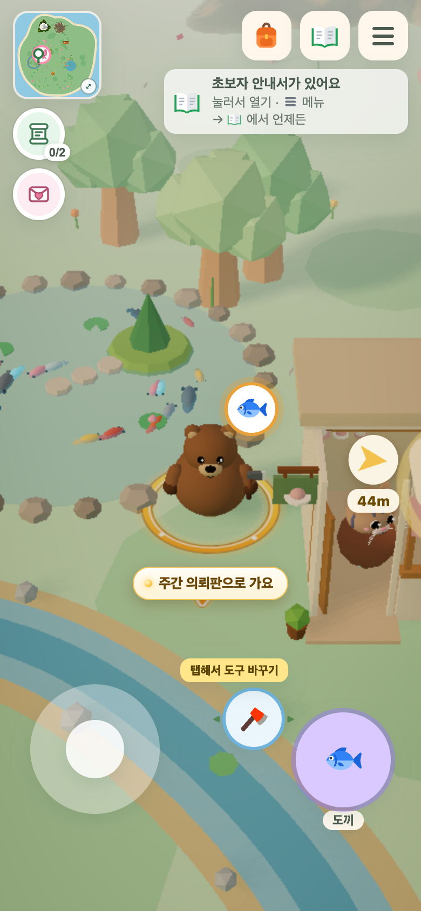
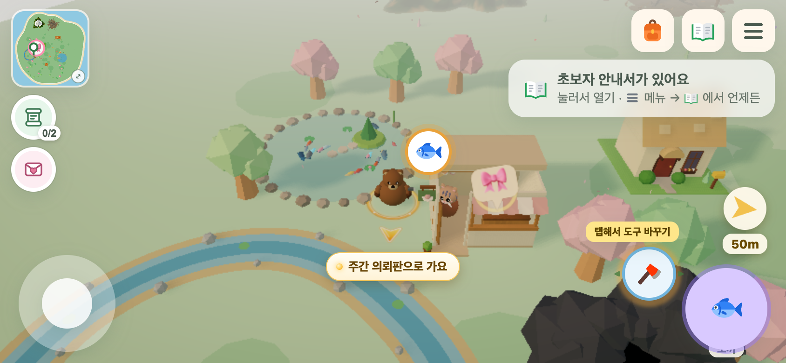

연못 근처에서 물가 꾸미기를 여는 세 가지 진입 방식을 비교합니다. 각 시안은 PC·모바일 세로·모바일 가로 세 화면으로 확인하세요.
연못 근처에 서면 하단에 두 버튼이 나타납니다. PC는 나란한 두 알약, 터치는 메인 🐟 버튼 위에 작은 🪨 버튼이 붙습니다. 처음 접근 시 🪨 요소가 금빛으로 한 번 반짝입니다.



연못 남쪽 물가에 작은 나무 팻말이 서 있고 위에 🪨 말풍선이 떠 있습니다. 팻말 근처에 서면 액션이 🪨 물가 꾸미기로 바뀌고, 멀어지면 🐟 내 연못으로 돌아옵니다. 말풍선은 이모지만 표시 (텍스트 없음).
연못 위에 네 개의 둥근 이모지 말풍선이 떠 있습니다: 📒 🍞 🌊 🪨. 탭하면 해당 기능이 열리고, 선택된 말풍선이 강조됩니다. 🪨가 선택된 상태를 보여 줍니다.